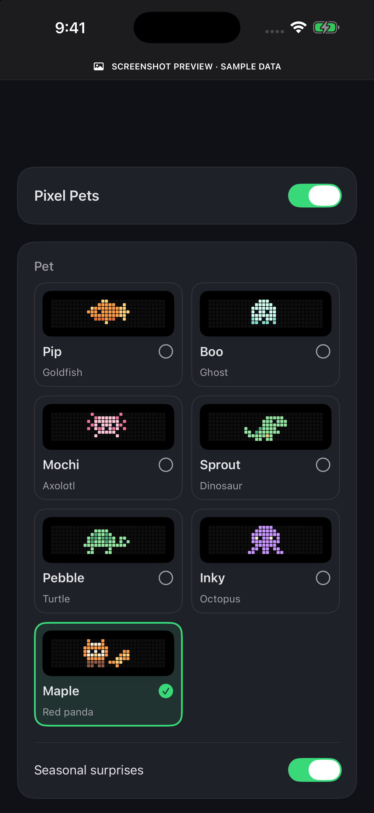
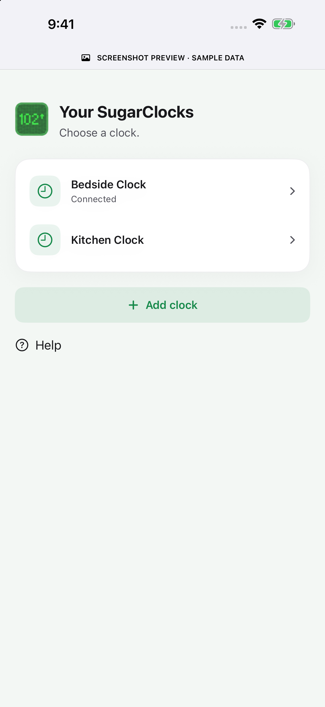

A name for every clock.
Keep your bedside and kitchen clocks together in My Clocks. Select the one you want, without looking up an IP address.
The iOS companion
A simpler way to set up your SugarClock, fine-tune its display, and give it a little personality. Right from your iPhone.
See how it worksRequires a Ulanzi TC001 running Bluetooth-capable SugarClock firmware and iOS 17 or later. Hardware sold separately.


Small changes. Your kind of clock.
Manage the details from your phone, then let your clock get on with its day.
Keep your bedside and kitchen clocks together in My Clocks. Select the one you want, without looking up an IP address.
After loading a clock once, edit its saved settings across screens—even while disconnected. Review your changes, then tap Update clock.
Choose from seven little companions on supported firmware. Pick Pip, Boo, Mochi, Sprout, Pebble, Inky or Maple.
A closer look
Actual app screens, shown with sample data. Light and dark appearance follow your device.



Getting started
The clock fetches readings over its own Wi-Fi and keeps its display and configured alerts running when the app is closed.
Yes, with Bluetooth-capable SugarClock firmware. Older firmware cannot be discovered by the app. Supported OTA upgrades preserve settings; older layouts may need the USB migration procedure. The app reads existing settings so you can keep configured credentials.
The current app provides Dexcom Share and custom URL / compatible Nightscout configuration. Provider accounts and availability are separate from SugarClock. New Libre-specific controls remain in the clock's web settings for now.
No SugarClock account or subscription is required. The app uses foreground Bluetooth sessions for configuration. The clock needs Wi-Fi and a working provider connection to fetch new readings. Brief Bluetooth interruptions can occur while the clock performs network work.
Clock names and identifiers, settings snapshots, and pending edits help you reconnect and continue editing. Pending settings use device-only Keychain storage. The clock separately communicates with your chosen data provider and SugarClock's fleet service. Read the privacy draft.